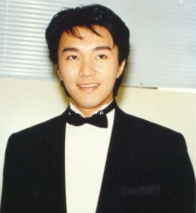

|  | English Name | Stephen Chow |
|---|---|---|
| Full Name | Stephen Chow Sing-Chi | |
| Born | June 22,1962(age 59 years),Kowloon,Hong Kong | |
| Nationality | China | |
| Alma mater | San Marino High School,Guangzhou University | |
| Occupation | Film maker actor comedian | |
| Years active | As Director 1980-present. As Actor 1988-2008 | |
| Height | 1.7m(5 ft 7 in) | |
| Parents | Chow Yik-sheung(father) Ling Po-yee(mother) |
Chow attended Heep Woh Primary School, a missionary school attached to the Hong Kong Council of the Church of Christ in China in Prince Edward Road, Kowloon Peninsula. When he was nine, he saw Bruce Lee's film The Big Boss, which inspired him to become a martial arts star.
Stephen Chow was the only boy of his family, and has grown up as a Bruce Lee fan and a martial arts addict. His career started on TV, where he presented a children show ( "430 Space Shuttle" (1983)) and started becoming popular. He got some supporting roles, after that, and won the Taiwanese Golden Horse award for best supporting actor.
List of films
| Year | Title | Director | Co-Stars | Role |
|---|---|---|---|---|
| 1990 | All for the Winner | Jeffrey Lau | Man Tat Ng,Man Cheung | Chow Sin Cho |
| 2001 | Shaolin Soccer | Stephen Chow | Wei Zho,Yat-Fei Wong | Mighty Steel Leg Sing |
| 2004 | Kung Fu Hustle | Stephen Chow | Wah Yuen,Qiu Yuen | Sing |